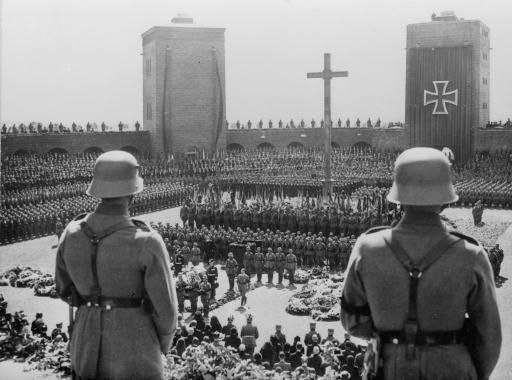

Почему пала Веймарская республика?
Автор статьи: Максим Вахминцев
Опубликовано: 4 сентября 2023
Опубликовано: 4 сентября 2023
Статья в группе ВК Историческая империя: https://clck.ru/3M6F6e
Как известно, Германия отказалась от монархии в 1918 году и стала демократической республикой. В стране долгое время было неспокойно, но тем не менее немцы наконец-то получили возможность самостоятельно управлять своим государством. В 1920-х Германия вышла из международной изоляции и получала весьма солидную финансовую поддержку от стран Запада.
Как известно, Германия отказалась от монархии в 1918 году и стала демократической республикой. В стране долгое время было неспокойно, но тем не менее немцы наконец-то получили возможность самостоятельно управлять своим государством. В 1920-х Германия вышла из международной изоляции и получала весьма солидную финансовую поддержку от стран Запада.
Вступление морской бригады Эрхардта в Берлин.
Что же в итоге привело к падению Веймарской республики в Германии, к отказу немцев от демократии и приходу к власти нацистов, упразднивших гражданские права и свободы? Предлагаю сегодня попытаться найти ответ на этот вопрос.
Фрайкоры во время Капповского путча
На протяжении всей своей недолгой истории – чуть более 15 лет – Веймарская республика подвергалась атакам со стороны левых и правых радикалов. Они имели разные цели, но одну общую задачу – ликвидировать республику и демократию. До 1923 года германское правительство успело подавить Рурское восстание, Капповский путч, Баварскую советскую республику, а также Пивной путч в той же Баварии.
Ганс фон Сект сидит в машине на переднем плане в разговоре с офицером во время
маневров 5-й и 7-й пехотных дивизий на юге Германии, 1926 год
маневров 5-й и 7-й пехотных дивизий на юге Германии, 1926 год
Фрайкоры, участвовавшие в подавлении коммунистических выступлений, состояли из фронтовиков, бандитов и авантюристов, потому не вызывали доверия у правительства и командующего рейхсвером Ханса фон Секта. Вместе с тем и сам рейхсвер был не до конца лоялен республике – его командный состав и офицерский корпус в немалой степени состояли из монархистов, считавших, что Запад навязал Германии Веймарскую конституцию. Тот же Сект игнорировал ее запрет на религиозную дискриминацию и отказывался принимать евреев в рейхсвер. А с началом Капповского путча командующий германской армией произнес знаменитую фразу: «Рейхсвер не стреляет в рейхсвер!».

Смотр войск рейхсвера президентом Германии Фридрихом Эбертом.
Хотя Германия формально и стала демократической республикой, ее вооруженные силы не перешли под гражданский контроль. Армией по-прежнему управляли военные, прусские офицеры и ветераны-фронтовики Первой мировой войны. Руководство республики не имело реального контроля над рейхсвером и предпочитало не портить с ним отношения. Ситуация стала налаживаться после избрания Пауля фон Гинденбургом президентом Германии и ухода Ханса фон Секта с поста командующего рейхсвером – у Гинденбурга и Секта еще со времен войны были весьма натянутые отношения.
Немалая часть населения искренне верила словам генерала Людендорфа о том, что Германию «ударили ножом в спину». Действительно: формально германская армия закончила Первую мировую войну не на своей, а на вражеской территории, не пустив войска Антанты к себе в страну. Заводы и города Германии, в отличие от той же Франции, не подверглись разрушению. Благодаря усилиям пропаганды немцы до последнего дня войны верили, что могут победить и победят.
Но на деле экономика Германии к концу 1918 года выживала из последних сил. Все мало-мальски ценные ресурсы, в том числе полученные с Востока (прежде всего из Украины) выделялись на нужды фронта. Страна стала испытывать проблемы с продовольствием и денежной инфляцией, а колоссальные людские потери на фронтах значительно сократили мужское население Германии.
Сами германские военные при изучении опыта войны убедились, что их армия проиграла по делу. Практически дойдя до Парижа, немцы были вынуждены остановиться из-за колоссального людского и огневого превосходства союзников. Противостоять одновременно США, Франции, Британии и ее доминионам истощенная Германия больше не могла.
Версальский мир лег тяжким бременем на Германию. Страна лишилась всех колоний и немалых территорий в Европе:
Будучи в шоке от тяжелых условий Версальского мира, немцы волей-неволей забывали, что совсем недавно сами продиктовали такие же тяжелые условия мира Франции (Франкфуртский мир 1871 года) и России (Брест-Литовский мир 1918 года). Помимо больших контрибуций, Германия потребовала от своих врагов территориальных уступок – Франция лишилась Эльзас-Лотарингии (которая, справедливости ради, изначально находилась в составе Священной Римской империи), а Россия отказалась от огромных территорий в Польше, Белоруссии, Украине, Финляндии, Прибалтике и на Кавказе.
Но на деле экономика Германии к концу 1918 года выживала из последних сил. Все мало-мальски ценные ресурсы, в том числе полученные с Востока (прежде всего из Украины) выделялись на нужды фронта. Страна стала испытывать проблемы с продовольствием и денежной инфляцией, а колоссальные людские потери на фронтах значительно сократили мужское население Германии.
Сами германские военные при изучении опыта войны убедились, что их армия проиграла по делу. Практически дойдя до Парижа, немцы были вынуждены остановиться из-за колоссального людского и огневого превосходства союзников. Противостоять одновременно США, Франции, Британии и ее доминионам истощенная Германия больше не могла.
Версальский мир лег тяжким бременем на Германию. Страна лишилась всех колоний и немалых территорий в Европе:
- Шлезвиг был разделен между Данией и Германской республикой;
- Польша к 1923 году заполучила Познань, часть Силезии и выход к Балтийскому морю – Данциг был объявлен «вольным городом»;
- Эльзас и Лотарингия возвращались в состав Франции;
- рейхсвер, сокращенный до 100 тыс. человек, обязался покинуть Саар и Рейнскую область;
- Австрии запрещалось объединение с Германией, хотя немало австрийцев желало воссоединиться со своей исторической родиной.
Будучи в шоке от тяжелых условий Версальского мира, немцы волей-неволей забывали, что совсем недавно сами продиктовали такие же тяжелые условия мира Франции (Франкфуртский мир 1871 года) и России (Брест-Литовский мир 1918 года). Помимо больших контрибуций, Германия потребовала от своих врагов территориальных уступок – Франция лишилась Эльзас-Лотарингии (которая, справедливости ради, изначально находилась в составе Священной Римской империи), а Россия отказалась от огромных территорий в Польше, Белоруссии, Украине, Финляндии, Прибалтике и на Кавказе.
Французские войска входят в Рейнскую область.
Потеря Рейнской области существенно ударила по германской промышленности и притом снизила способность Германии к выплате репараций победившим державам. Франция стремилась не упустить случая отомстить своему соседу и врагу за унижение 1871-го и нападение в 1914-м. Когда в Берлине объявили о невозможности выплачивать репарации – фактически о банкротстве страны – Франция и Бельгия немедля ввели войска в Рейнскую область и установили там оккупационный режим.
Ситуация грозила перерасти в новую войну между Францией и Германией, но план Дауэса позволил ее предотвратить. США были заинтересованы в платежеспособности Берлина, поскольку сами ожидали от Франции и Британии возвращения долгов. Новая схема репараций позволила спасти германскую экономику и прекратить режим оккупации Рейна.
Для обеспечения выплат репараций Рейхсбанк и Имперские железные дороги были поставлены под международный контроль. Одновременно германские экономисты предприняли ряд следующих мер:
Ситуация грозила перерасти в новую войну между Францией и Германией, но план Дауэса позволил ее предотвратить. США были заинтересованы в платежеспособности Берлина, поскольку сами ожидали от Франции и Британии возвращения долгов. Новая схема репараций позволила спасти германскую экономику и прекратить режим оккупации Рейна.
Для обеспечения выплат репараций Рейхсбанк и Имперские железные дороги были поставлены под международный контроль. Одновременно германские экономисты предприняли ряд следующих мер:
- поощрение внешних инвестиций;
- сокращение госаппарата;
- повышение налогов для физических лиц;
- инвестиции в развитие промышленности;
- льготы на экспорт германской продукции и в целом защита отечественных производителей.
Густав Штреземан, Остин Чемберлен и Аристид Бриан во время переговоров в Локарно.
Кроме того, Германия добилась существенных успехов во внешней политике. Берлин грамотно лавировал между Советской Россией и Западом: последний видел в ней форпост борьбы с коммунизмом, а Москва имела схожую с Берлином антипатию к Польше и схожее желание избавиться от Версальско-Вашингтонской системы. Рапалльский мир и Локарнские договоры обезопасили границы Германии с востока и запада, а командующий рейхсвером Ханс фон Сект вел активное сотрудничество с Красной армией. Немецкие офицеры изучали советские военные технологии и, вместе с тем, организовывали на территории Союза танковые и авиационные школы, создавать которые в пределах самой Германии они не могли из-за запретов Версаля.
Адольф Гитлер во время избирательной кампании, 4 апреля 1932 г.
«Золотые двадцатые» стали временем относительного расцвета, ренессанса Германии на международной арене. Вместе с тем ее экономика попала в колоссальную зависимость от внешних инвестиций, а собственных резервов на случай кризиса у Германии не было. Таковой настал в 1929 году, когда рухнула Нью-Йоркская фондовая биржа и началась знаменитая Великая депрессия. Все ужасы 6-летней давности вновь стали реальностью: немцы не могли справиться с ростом безработицы, гиперинфляцией, упадком производства и другими бедами.
В сельских районах Германии поддержку стала набирать НСДАП Адольфа Гитлера. Нацисты рассчитывали на новых парламентских выборах заручиться поддержкой крестьян. Они обещали защищать сельское хозяйство от иностранной конкуренции и разглагольствовали о вреде городского космополитизма, которому чужд национальный дух и ценности консерватизма. Постепенно, по мере возрастания экономического кризиса, нацисты стали обретать популярность и в других слоях населения. Люди устали от бесконечной правительственной чехарды и неспособности престарелого Гинденбурга собрать команду профессионалов, способных вытащить экономику Германии со дна.

В сельских районах Германии поддержку стала набирать НСДАП Адольфа Гитлера. Нацисты рассчитывали на новых парламентских выборах заручиться поддержкой крестьян. Они обещали защищать сельское хозяйство от иностранной конкуренции и разглагольствовали о вреде городского космополитизма, которому чужд национальный дух и ценности консерватизма. Постепенно, по мере возрастания экономического кризиса, нацисты стали обретать популярность и в других слоях населения. Люди устали от бесконечной правительственной чехарды и неспособности престарелого Гинденбурга собрать команду профессионалов, способных вытащить экономику Германии со дна.
Похороны Пауля фон Гинденбурга в Танненбергском мемориале.
Смерть Пауля фон Гинденбурга в августе 1934 года как бы символизировала смерть Пруссии и Веймарской республики. Годом ранее Гитлер получил не только пост рейхсканцлера, но и практически неограниченную власть. Этому способствовал президентский декрет «О защите народа и государства», ликвидировавший все прописанные в Веймарской конституции гражданские права и свободы немцев. Германия стала превращаться в тоталитарную диктатуру и начала неуклонное движение к новой мировой войне. По ее итогам страна отказалась от сильной президентской власти и взяла курс на установление парламентской демократии, панически боясь появления «нового Гитлера».
Итак, что же в итоге погубило Веймарскую республику? Причинами провала первого демократического опыта в Германии стали:
Итак, что же в итоге погубило Веймарскую республику? Причинами провала первого демократического опыта в Германии стали:
- отсутствие консенсуса между политическими партиями;
- антиправительственные выступления коммунистов, а затем нацистов;
- нелояльность рейхсвера;
- нелояльность большинства немцев к конституционной демократии;
- тяжелые условия Версальского договора, а затем попадание страны в зависимость от иностранных капиталовложений.